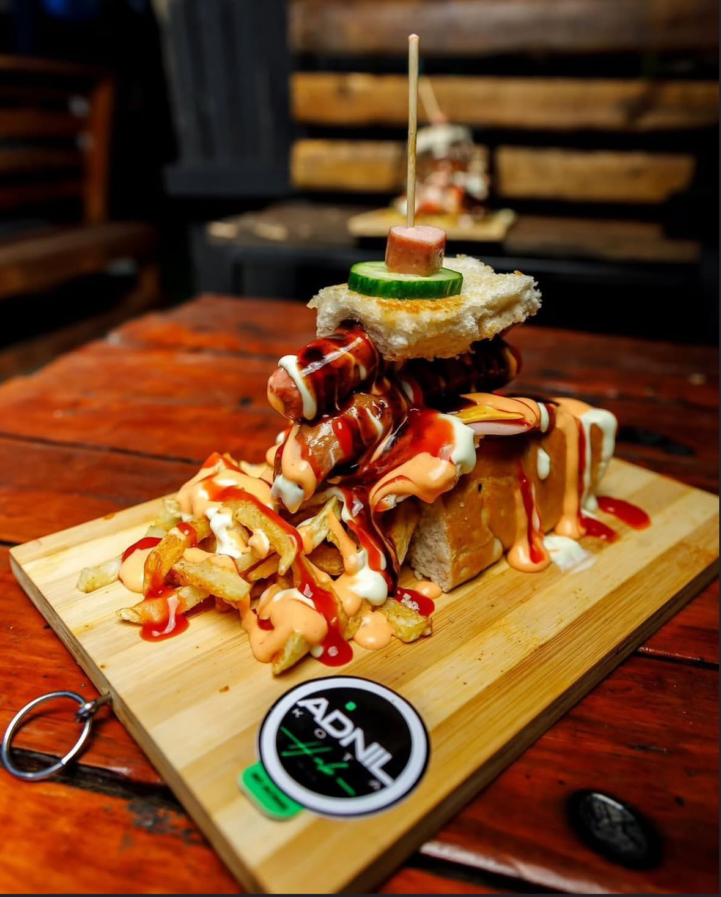
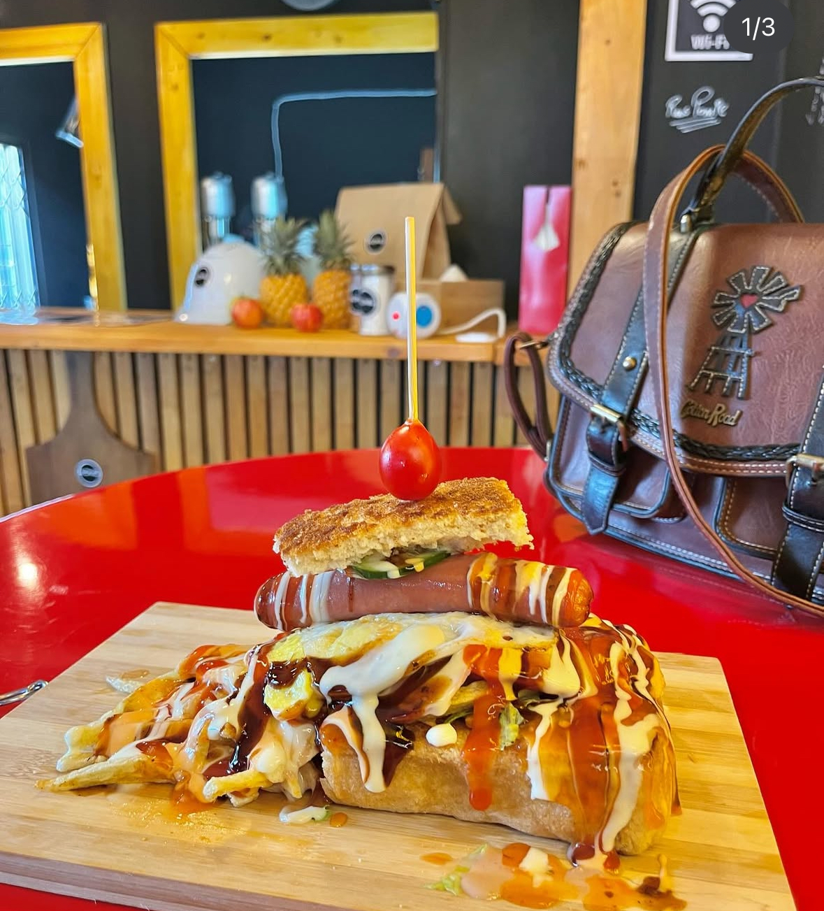

Welcome to Adnil Kota Hub
Bloemfontein's Home of the Perfect Kota
Affordable, delicious, and made with love.
About Us
Adnil Kota Hub is a newly established fast-food restaurant located in the heart of the Bloemfontein CBD. We specialize in creating the perfect Kota, a beloved South African street food, known for its incredible taste, affordability, and cultural significance.
Our mission is to deliver a delicious, satisfying, and authentic meal to every customer, from students looking for a quick bite to kota enthusiasts seeking the best in town.
Find Us
Come visit us at our location:
Address: Louis Building, 80 Oliver Tambo Road, Bloemfontein CBD
Operating Hours
Monday - Friday: 8:00 AM - 6:00 PM
Saturday: 9:00 AM - 3:00 PM
Sunday: Closed